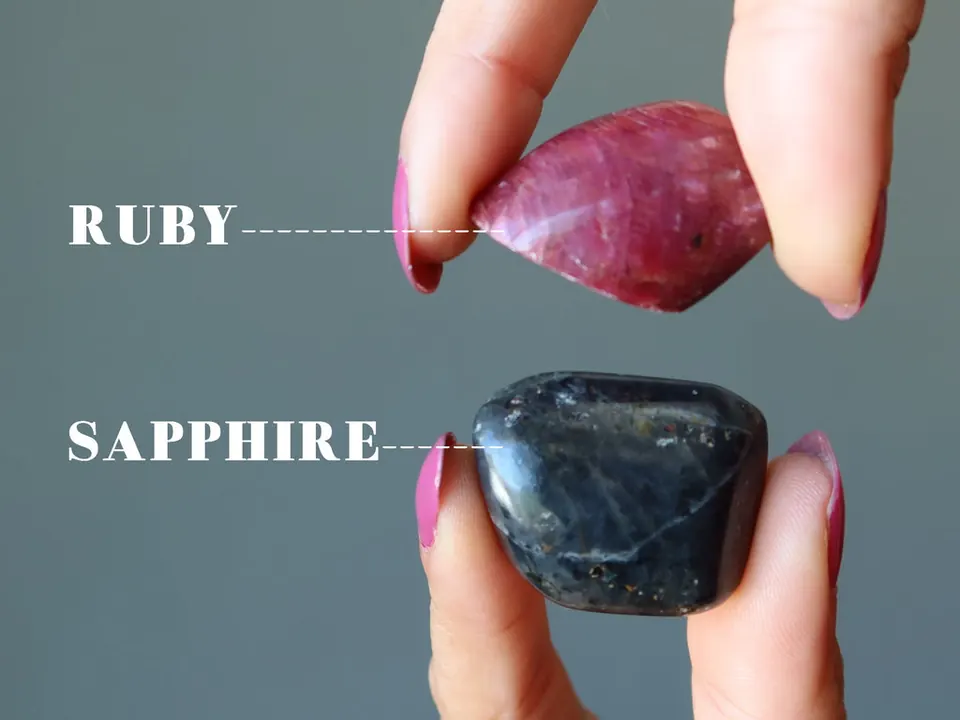
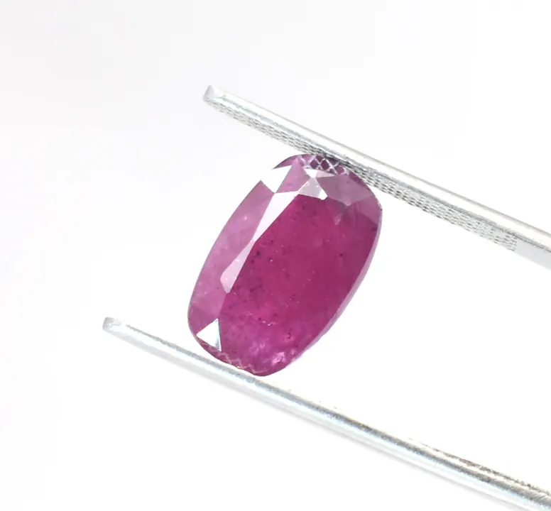

帕帕拉恰：蓮花色藍寶石的東西方之爭
帕帕拉恰是藍寶石裡的異端——不藍，卻最貴。蓮花色背後，是一場東方與西方對「美」的定義之爭。


核心定義
帕帕拉恰（padparadscha）是藍寶石中唯一以「粉橙蓮花色」聞名的特殊色——名字源自梵語「蓮花」（padma），象徵清晨蓮花的粉橙色。它不是染色或處理的結果，而是鉻與鐵在剛玉中共同作用的天然色調。
問題在於：什麼才算帕帕拉恰？這個問題吵了一百年。GIA 的定義是「粉橙混合、色調中淺」的藍寶石；部分機構要求必須帶「明顯橙色調」；斯里蘭卡傳統派認為只有斯里蘭卡產的才算；而國際市場早已開放給馬達加斯加等產地。東西方的標準之爭，至今未歇。
特徵與分類
| 色相範圍 | 描述 | 爭議 |
|---|---|---|
| 粉橙（偏粉） | 蓮花般的粉橙 | 西方機構多認可 |
| 橙粉（偏橙） | 夕陽般的橙粉 | 傳統派更偏愛 |
| 粉紅帶橙 | 粉多橙少 | 部分機構不認可 |
| 橙紅 | 過橙 | 多數不認可（成橙色藍寶） |
學術與商業的共識是：帕帕拉恰必須「粉與橙並存且色調不過深」——太粉是粉紅藍寶、太橙是橙色藍寶、太深是棕色調。它的「蓮花色」是精準的平衡點，也因此極難定義。
科學原理
帕帕拉恰的顏色機制是鉻與鐵的雙重作用：鉻提供粉紅，鐵提供黃橙，兩者比例決定了最終是「粉橙」還是「橙粉」。產地差異也在這裡顯現——斯里蘭卡鐵含量低，多為柔粉橙；馬達加斯加鐵較高，可能偏橙。
這也解釋了為什麼「產地」與「標準」糾纏不清：不同產地的鉻鐵配方不同，顏色有微妙差異，而每個市場都用「自己的蓮花」定義帕帕拉恰。
鑑定與鑑別方法
- 確認色相落在粉橙交界（既非純粉也非純橙）
- 檢查色調不過深（帕帕拉恰以中淺色調為佳）
- 對照權威證書的 color 描述與評語
- 顯微鏡檢查天然特徵，排除擴散/染色處理
- 注意「粉橙剛玉」與帕帕拉恰的市場命名差異
市場行情與保養建議
帕帕拉恰是藍寶石中單克拉價最高的品類之一：頂級斯里蘭卡帕帕拉恰（無燒、粉橙平衡）1 克拉以上即可達數萬美元等級，馬達加斯加產也身價不菲。「夠不夠格」的標準差異，讓它成為市場上最容易被議價的寶石。
購買鐵律：要求權威實驗室證書（GIA/SSEF 等）對顏色的明確認定，並確認無熱處理——燒過與未燒的帕帕拉恰，價格可差數倍。
常見誤區
不是。帕帕拉恰必須「粉橙」相間——純粉紅藍寶石叫粉紅藍寶，不叫帕帕拉恰。名字的含金量，就在那個「橙」字。
傳統派如此主張，但國際市場與主流實驗室已開放其他產地。重要的是「顏色達標＋證書認定」，產地只是加分敘事，不是唯一門檻。
冷知識
帕帕拉恰的名字來自蓮花，象徵清晨蓮花的色澤。東方美學把它與宗教意象綁定，西方則試圖用光譜定義它——一個名字，兩種文明。
因為鉻鐵配比敏感，光源不同，帕帕拉恰的粉橙比例會微妙變化——日光下粉、燈光下橙，是它的浪漫特質。
反直覺觀點
實驗室標準不一（有的要求明顯橙、有的接受粉橙平衡），同一顆寶石在不同機構會有不同「身份」——對買家，這既是議價空間，也是踩雷風險。
極品帕帕拉恰的粉橙平衡讓機構也難下定論，反而因「爭議美學」而更稀有。完美地處在灰色地帶，本身就是一種價值。